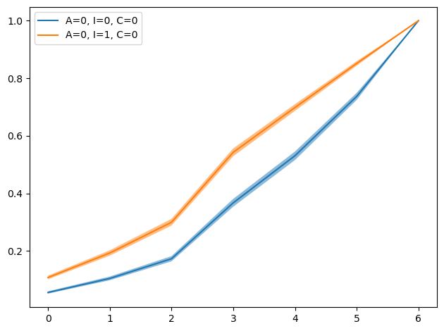

import pandas as pd
import numpy as np
from matplotlib import pyplot as plt
import seaborn as sns
import scipy.stats as st
from statsmodels.miscmodels.ordinal_model import OrderedModel
import arviz as az
import bambi as bmb
import pymc as pmEarlier in my career I made a mistake while communicating results of my work.
I needed to fit an ordered logit for a model and needed to communicate the effect of variables which I did via weight plot, where dots represent the estimated coefficient and the lines represent its standard error. However, it was misleading because coefficients of an ordered logit model are in log-odds scale which we are, as humans, not operating under intuitively. My lowest category had very high base rate, so those big coefficients weren’t shifting the probability mass much.
So, what should have been done? Well, I should have pushed predictions out of the model under different values of whatever the variable that was in the interest and show the change in the distribution. Like, computing the predicted values when its at 0 vs when its at 1. Let me show you an example below.
FREQUENTIST WAY
df = pd.read_csv('Trolley_data.csv', index_col=0)
df.head()| case | response | order | id | age | male | edu | action | intention | contact | story | action2 | |
|---|---|---|---|---|---|---|---|---|---|---|---|---|
| 1 | cfaqu | 4 | 2 | 96;434 | 14 | 0 | Middle School | 0 | 0 | 1 | aqu | 1 |
| 2 | cfbur | 3 | 31 | 96;434 | 14 | 0 | Middle School | 0 | 0 | 1 | bur | 1 |
| 3 | cfrub | 4 | 16 | 96;434 | 14 | 0 | Middle School | 0 | 0 | 1 | rub | 1 |
| 4 | cibox | 3 | 32 | 96;434 | 14 | 0 | Middle School | 0 | 1 | 1 | box | 1 |
| 5 | cibur | 3 | 4 | 96;434 | 14 | 0 | Middle School | 0 | 1 | 1 | bur | 1 |
Are you familiar with Trolley problems? If not, you haven’t been reading much ethics probably.
Trolley problems are ethical dilemmas designed in a specific way. There are various versions of it. Here’s one of them:
There’s a runaway trolley and it’s on a track towards five people who are tied up (they cannot escape). You’re near a lever and if you pull it, the road will diverge and the trolley will hit to a person. Should you pull the lever?
This is a dilemma, since it puts you into a situation where either 1 person or 5 people will lose their lives. In our dataset, we have different version of these scenarios (not necessarily trolleys) where each have different features which are reflected as action, intention, and contact in the dataframe.
Action means the person takes an action (like pulling the lever). In the intention scenario, the person pulls the lever and once the trolley hits to the first person it stops hence does not hit the other five (if you don’t, it will). In the contact version, the person pushes a guy and trolley hits the pushed person and stops. Again, stories doesn’t have to be trolley; you can see the variance in the story column.
Since idea of this post is to focus on visualization, we’ll move on with action, intention, and contact.
ol_m1 = OrderedModel(
df['response'],
df[['action', 'intention', 'contact']],
distr='logit'
)res_m1 = ol_m1.fit(method='bfgs', disp=False)
res_m1.summary()| Dep. Variable: | response | Log-Likelihood: | -18536. |
| Model: | OrderedModel | AIC: | 3.709e+04 |
| Method: | Maximum Likelihood | BIC: | 3.715e+04 |
| Date: | Sun, 15 Feb 2026 | ||
| Time: | 22:22:14 | ||
| No. Observations: | 9930 | ||
| Df Residuals: | 9921 | ||
| Df Model: | 3 |
| coef | std err | z | P>|z| | [0.025 | 0.975] | |
| action | -0.7091 | 0.041 | -17.498 | 0.000 | -0.789 | -0.630 |
| intention | -0.7205 | 0.037 | -19.709 | 0.000 | -0.792 | -0.649 |
| contact | -0.9614 | 0.050 | -19.221 | 0.000 | -1.059 | -0.863 |
| 1/2 | -2.8374 | 0.047 | -60.363 | 0.000 | -2.930 | -2.745 |
| 2/3 | -0.3829 | 0.032 | -11.979 | 0.000 | -0.446 | -0.320 |
| 3/4 | -0.5404 | 0.029 | -18.541 | 0.000 | -0.597 | -0.483 |
| 4/5 | 0.0213 | 0.019 | 1.123 | 0.262 | -0.016 | 0.058 |
| 5/6 | -0.4032 | 0.025 | -16.415 | 0.000 | -0.451 | -0.355 |
| 6/7 | -0.0981 | 0.025 | -3.921 | 0.000 | -0.147 | -0.049 |
Instead of relying on a table (which is almost always a bad idea, you may want to search table 2 fallacy), let’s do what has been suggested above.
cats = res_m1.model.labels
catsarray([1, 2, 3, 4, 5, 6, 7])new_df = pd.DataFrame({
'action':[0, 0],
'intention':[0, 1],
'contact':[0, 0]
})
new_df| action | intention | contact | |
|---|---|---|---|
| 0 | 0 | 0 | 0 |
| 1 | 0 | 1 | 0 |
So we vary the intention only, while keeping action and contact fixed. I’ll only do this comparison but others are valid as well.
df.groupby(['action', 'intention', 'contact']).size()action intention contact
0 0 0 1655
1 993
1 0 1986
1 993
1 0 0 2648
1 0 1655
dtype: int64res_m1.model.predict(res_m1.params, new_df, which='cumprob')array([[0.05533774, 0.1038192 , 0.1717946 , 0.36552308, 0.52913695,
0.73560502, 1. ],
[0.10746953, 0.19232512, 0.2989207 , 0.54216151, 0.69787495,
0.85116506, 1. ]])preds = pd.DataFrame(res_m1.model.predict(res_m1.params, new_df, which='cumprob'))
preds| 0 | 1 | 2 | 3 | 4 | 5 | 6 | |
|---|---|---|---|---|---|---|---|
| 0 | 0.055338 | 0.103819 | 0.171795 | 0.365523 | 0.529137 | 0.735605 | 1.0 |
| 1 | 0.107470 | 0.192325 | 0.298921 | 0.542162 | 0.697875 | 0.851165 | 1.0 |
plt.figure(figsize=(7, 5))
plt.plot(preds.iloc[0, :], label='A=0, I=0, C=0')
plt.plot(preds.iloc[1, :], label='A=0, I=1, C=0')
plt.legend()
Same thing can be done for each possible combination and included with subplots. I just wanted to convey the idea.
If you’re interested in Bayesian version, Bambi provides a very quick way to fit.
BAYESIAN WAY
df = pd.read_csv('Trolley_data.csv', usecols=['response', 'action', 'intention', 'contact'])
df.head()| response | action | intention | contact | |
|---|---|---|---|---|
| 0 | 4 | 0 | 0 | 1 |
| 1 | 3 | 0 | 0 | 1 |
| 2 | 4 | 0 | 0 | 1 |
| 3 | 3 | 0 | 1 | 1 |
| 4 | 3 | 0 | 1 | 1 |
df['response'] = pd.Categorical(df['response'], ordered=True)ol_m2 = bmb.Model('response ~ action + intention + contact', data=df, family='cumulative')
idata_m2 = ol_m2.fit()/opt/anaconda3/envs/pymc_env/lib/python3.12/site-packages/bambi/formula.py:111: UserWarning: The intercept is omitted in ordinal families
warnings.warn("The intercept is omitted in ordinal families")
Initializing NUTS using jitter+adapt_diag...
Multiprocess sampling (4 chains in 4 jobs)
NUTS: [threshold, action, intention, contact]/opt/anaconda3/envs/pymc_env/lib/python3.12/site-packages/pytensor/compile/function/types.py:992: RuntimeWarning: invalid value encountered in accumulate
outputs = vm() if output_subset is None else vm(output_subset=output_subset)Sampling 4 chains for 1_000 tune and 1_000 draw iterations (4_000 + 4_000 draws total) took 58 seconds.az.summary(idata_m2)| mean | sd | hdi_3% | hdi_97% | mcse_mean | mcse_sd | ess_bulk | ess_tail | r_hat | |
|---|---|---|---|---|---|---|---|---|---|
| action | -0.704 | 0.041 | -0.779 | -0.622 | 0.001 | 0.001 | 2613.0 | 2819.0 | 1.0 |
| contact | -0.956 | 0.050 | -1.054 | -0.867 | 0.001 | 0.001 | 2731.0 | 3021.0 | 1.0 |
| intention | -0.716 | 0.036 | -0.784 | -0.651 | 0.001 | 0.000 | 3179.0 | 2883.0 | 1.0 |
| threshold[0] | -2.830 | 0.047 | -2.915 | -2.742 | 0.001 | 0.001 | 1812.0 | 2499.0 | 1.0 |
| threshold[1] | -2.148 | 0.043 | -2.222 | -2.064 | 0.001 | 0.001 | 2060.0 | 2642.0 | 1.0 |
| threshold[2] | -1.565 | 0.039 | -1.640 | -1.494 | 0.001 | 0.001 | 2104.0 | 2526.0 | 1.0 |
| threshold[3] | -0.544 | 0.037 | -0.615 | -0.475 | 0.001 | 0.001 | 2308.0 | 2756.0 | 1.0 |
| threshold[4] | 0.124 | 0.037 | 0.054 | 0.192 | 0.001 | 0.001 | 2524.0 | 3046.0 | 1.0 |
| threshold[5] | 1.031 | 0.039 | 0.958 | 1.106 | 0.001 | 0.001 | 2949.0 | 3336.0 | 1.0 |
grid = pd.DataFrame({
'action': [0, 0],
'intention': [0, 1],
'contact': [0, 0],
})idata_pred = ol_m2.predict(idata_m2, data=grid, kind='response_params', inplace=False)p = idata_pred.posterior['p']ps = p.stack(sample=('chain', 'draw')).transpose('sample', '__obs__', 'response_dim')
# CDF
cdfs = ps.cumsum(dim='response_dim')cdf_mean = cdfs.mean(dim='sample')
cdf_lo = cdfs.quantile(0.055, dim='sample')
cdf_hi = cdfs.quantile(0.945, dim='sample')x = np.arange(cdf_mean.sizes['response_dim'])
labels = ['A=0, I=0, C=0', 'A=0, I=1, C=0']
for i, lab in enumerate(labels):
y = cdf_mean.isel(__obs__=i).values
lo = cdf_lo.isel(__obs__=i).values
hi = cdf_hi.isel(__obs__=i).values
plt.plot(x, y, label=lab)
plt.fill_between(x, lo, hi, alpha=0.5)
plt.legend()
plt.tight_layout()
plt.show()